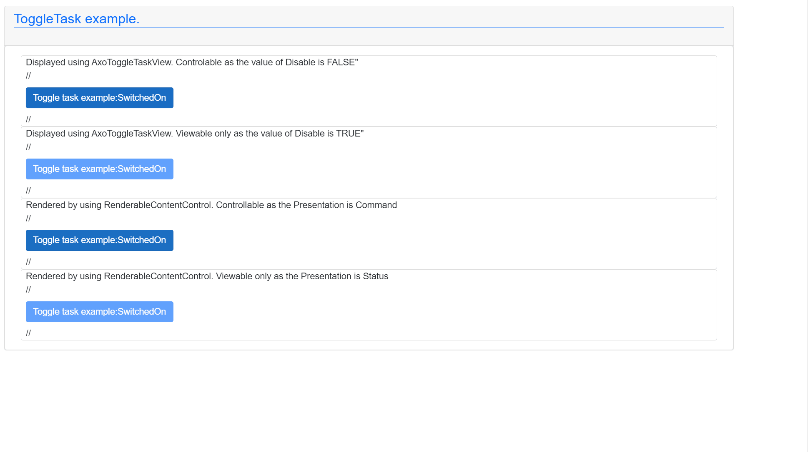

AxoToggleTask
AxoToggleTask provides basic switching on and off functions. AxoToggleTask needs to be initialized to set the proper AxoContext.
AxoToggleTask initialization within a AxoContext
CLASS AxoToggleTaskDocuExample EXTENDS AXOpen.Core.AxoContext
VAR PUBLIC
{#ix-set:AttributeName = "<#Toggle task example#>"}
{#ix-set:AttributeStateOnDesc = "<#SwitchedOn#>"}
{#ix-set:AttributeStateOffDesc = "<#SwitchedOff#>"}
_myToggleTask : AxoToggleTask;
_myCounter : ULINT;
END_VAR
METHOD PUBLIC Initialize
// Initialization of the context needs to be called first
// It does not need to be called cyclically, just once
_myToggleTask.Initialize(THIS);
END_METHOD
END_CLASS
There are three key methods for managing the AxoToggleTask:
SwitchOn()-ones is called and theAxoToggleTaskis not Disabled, changes the state of theAxoToggleTasktoTRUEif its previous state wasFALSE. (can be called fire&forget or cyclically). The method returnsTRUEif the change of the state was performed, otherwiseFALSE.SwitchOff()-ones is called and theAxoToggleTaskis not Disabled, changes the state of theAxoToggleTasktoFALSEif its previous state wasTRUE. (can be called fire&forget or cyclically). The method returnsTRUEif the change of the state was performed, otherwiseFALSE.Toggle()-ones is called and theAxoToggleTaskis not Disabled, changes the state of theAxoToggleTasktoTRUEif its previous state wasFALSEand vice-versa . (can be called fire&forget or cyclically). The method returnsTRUEif the change of the state was performed, otherwiseFALSE.
The methods SwitchOn() and SwitchOff() are designed to be used inside automatic logic, where change to exact value has to be performed, while Toggle() is designed to be used mostly in connection with manual control.
Example of using SwitchOn() method with its return value.
IF _myToggleTask.SwitchOn() THEN
; // do something on rising edge
END_IF;
Example of using SwitchOff() method with its return value.
IF _myToggleTask.SwitchOff()THEN
; // do something on falling edge
END_IF;
Example of using Toggle() method with its return value.
IF _myToggleTask.Toggle()THEN
; // do something on state change
END_IF;
To check the state of the task there are two methods:
IsSwitchOn()- returnsTRUEif the state of the task isTRUE.IsSwitchOff()- returnsTRUEif the state of the task isFALSE.
Example of using IsSwitchOn() method:
IF _myToggleTask.IsSwitchedOn() THEN
; // do something
END_IF;
Example of using IsSwitchOff() method:
IF _myToggleTask.IsSwitchedOff() THEN
; // do something
END_IF;
Moreover, there are five more "event-like" methods that are called when a specific event occurs (see the chart below).
To implement any of the already mentioned "event-like" methods the new class that extends from the AxoToggleTask needs to be created. The required method with PROTECTED OVERRIDE access modifier needs to be created as well, and the custom logic needs to be placed in.
These methods are:
OnSwitchedOn()- executes once when the task changes its state fromFALSEtoTRUE.OnSwitchedOff()- executes once when the task changes its state fromTRUEtoFALSE.OnStateChanged()- executes once when the task changes its state.SwitchedOn()- executes repeatedly while the task is inTRUEstate.SwitchedOff()- executes repeatedly while the task is inFALSEstate.
Example of implementing "event-like" methods:
CLASS MyToogleTaskExample Extends AxoToggleTask
VAR
OnSwitchedOnCounter : ULINT;
OnSwitchedOffCounter : ULINT;
OnStateChangedCounter : ULINT;
SwitchOnExecutionCounter : ULINT;
SwitchOffExecutionCounter : ULINT;
END_VAR
METHOD PROTECTED OVERRIDE OnSwitchedOn
OnSwitchedOnCounter := OnSwitchedOnCounter + ULINT#1;
END_METHOD
METHOD PROTECTED OVERRIDE OnSwitchedOff
OnSwitchedOffCounter := OnSwitchedOffCounter + ULINT#1;
END_METHOD
METHOD PROTECTED OVERRIDE OnStateChanged
OnStateChangedCounter := OnStateChangedCounter + ULINT#1;
END_METHOD
METHOD PROTECTED OVERRIDE SwitchedOn
SwitchOnExecutionCounter := SwitchOnExecutionCounter + ULINT#1;
END_METHOD
METHOD PROTECTED OVERRIDE SwitchedOff
SwitchOffExecutionCounter := SwitchOffExecutionCounter + ULINT#1;
END_METHOD
END_CLASS
How to visualize AxoToggleTask
On the UI side there are several possibilities how to visualize the AxoToggleTask.
You use the AxoToggleTaskView and set its Component according the placement of the instance of the AxoToggleTask.
Based on the value of Disable the control element could be controllable:
<AxoToggleTaskView Component="@Entry.Plc.AxoToggleTaskDocu._myToggleTask" Disable="false" />
or display only:
<AxoToggleTaskView Component="@Entry.Plc.AxoToggleTaskDocu._myToggleTask" Disable="true" />
The next possibility is to use the RenderableContentControl and set its Context according the placement of the instance of the AxoToggleTask.
Again as before the element could be controlable when the value of the Presentation is Command:
<RenderableContentControl Context="@Entry.Plc.AxoToggleTaskDocu._myToggleTask" Presentation="Command" />
or display only when the value of the Presentation is Status
<RenderableContentControl Context="@Entry.Plc.AxoToggleTaskDocu._myToggleTask" Presentation="Status" />
The displayed result should looks like:
